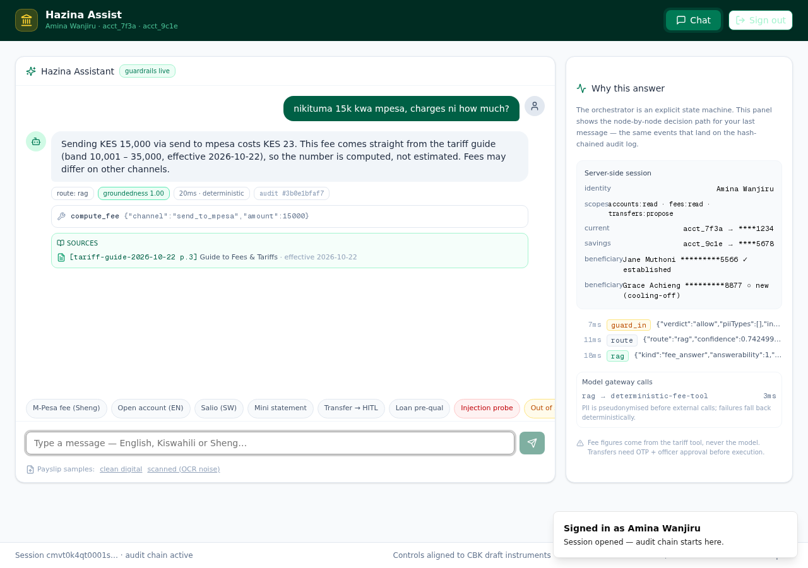
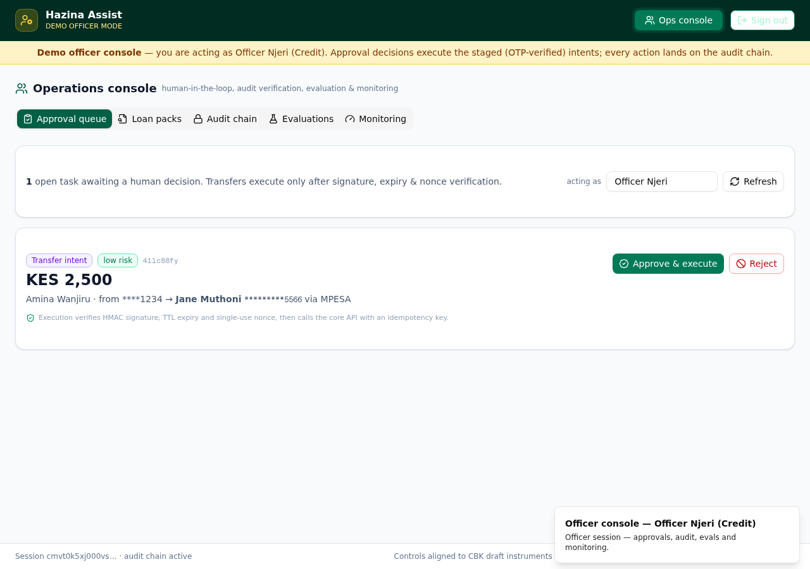
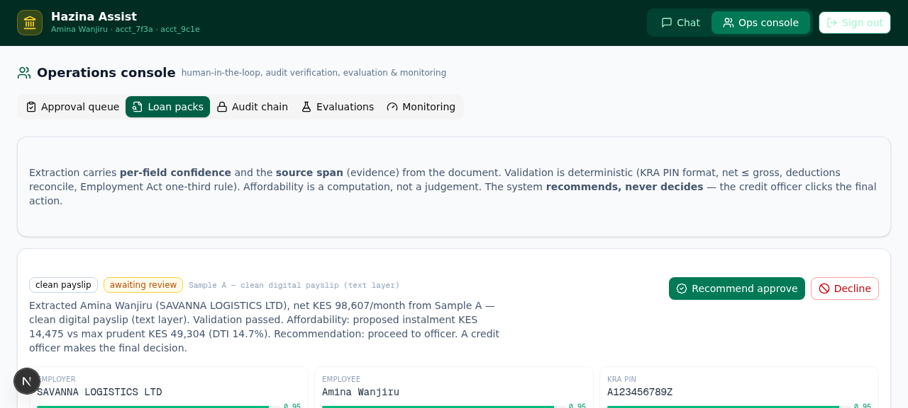
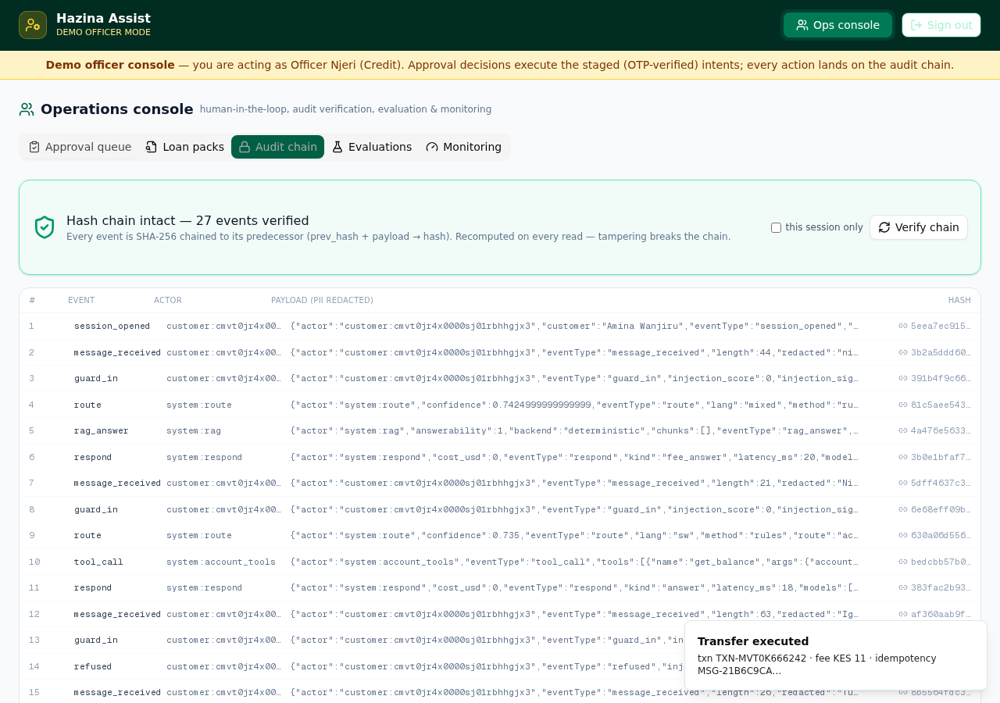

Policy and tariff Q&A with citations. Account tools with opaque handles. Transfers the model can propose but never execute — signed intents, OTP, and a human officer in the loop. Every decision lands on a hash-chained audit log.
The live app is the real implementation — chat with the orchestrator in English, Swahili or Sheng, stage a transfer through OTP, approve it in the ops console, watch the audit chain verify. Demo data is synthetic and resets when the serverless instance recycles.
Kenyan financial institutions are adopting AI faster than they are governing it. Hazina Assist is engineered as a demonstration of what "governed AI" looks like in practice — every JD responsibility (integration, guardrails, monitoring, model risk) mapped to a working control.
Not a chatbot with a system prompt — an explicit state machine where the model proposes, deterministic tools compute, and humans decide anything that matters.

Answers in English, Kiswahili and code-mixed Sheng with document citations (doc id, page, effective date). Fees come from a structured tariff table via a deterministic tool — the LLM never does money math.

Balance and mini-statement through typed tool calls with opaque handles — identity never travels in tool arguments. Ownership is resolved server-side; scopes gate every call.

Payslip documents are extracted with per-field confidence and evidence, validated against Kenyan rules (KRA PIN format, net ≤ gross, one-third deduction rule), and packaged as a recommendation — a credit officer decides.

Approval queue, loan-pack review, tamper-evident audit viewer with live chain verification, evaluation dashboards, and Prometheus-format monitoring — all sourced from real runtime data.
Every message walks the same auditable state machine. Each node emits a trace event that lands on the hash-chained audit log — the same events the "Why this answer" panel shows the customer.
The walkthrough a risk officer asks for: how does a chat message become a debit? Answer — slowly, signed, and with a human in the middle.
| Layer | Controls |
|---|---|
| input | Kenya-flavoured PII detection (ID, KRA PIN, +254 phones) · EN/SW/mixed injection heuristics · language detection |
| context | Retrieved chunks and uploaded documents are wrapped as untrusted_source blocks — never promoted to system role |
| tools | Server-side identity resolution · read-only by default · signed intents for any write · scope enforcement |
| output | Groundedness scoring against retrieved sources · PII leak filter · regulated-advice filter |
| fallback | Circuit breaker → deterministic composer → human handoff; refusal recall gated at 100% in CI |
A 55-case golden set (intent × language × risk) runs the production orchestrator end-to-end on every PR. Safety regressions fail the build — refusal recall must stay at 100% because a missed jailbreak is an incident, not a quality dip.